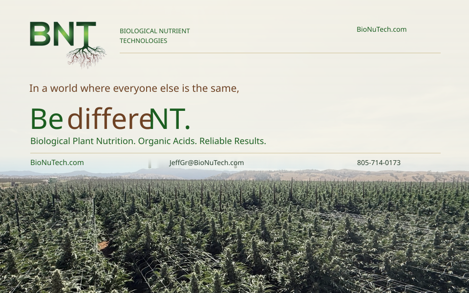

01 / MASTER BACKDROPPLACE → PROMISE → CONNECTION
96″ W × 60″ H

UPPER 65% TABLE-CLEARANCE ZONE
2.5″ Print-Safe Margin
Quiet perimeter protects brand and copy.
0.25″ bleed extends beyond the trim.
Sky that breathes
A continuous atmospheric veil steadies the typography; no boxed-off horizon.
< 3s at 10m Visual Angle
Design target for the main slogan.
Physical aisle test remains required.

 BIOLOGICAL NUTRIENT TECHNOLOGIES
BIOLOGICAL NUTRIENT TECHNOLOGIES